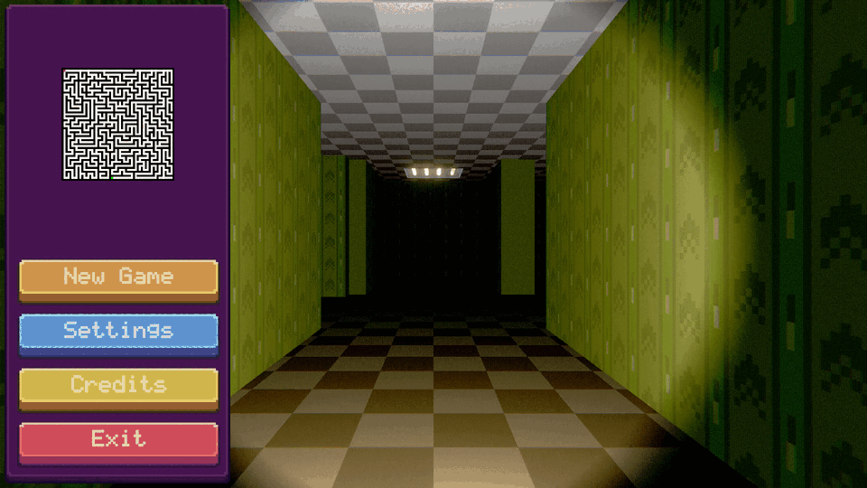

MazeRunner
Önemli olan labirentte kaybolmak değil, onu çözmektir.
Unity 6C#URP
Umittadelen
Karanlık bir labirent,
tek bir hedef.
Oyuncu bir labirente bırakılıyor ve çıkışı en kısa sürede bulmak zorunda.
İLHAM
Backrooms
İnternette doğan; sonsuz sarı koridorlar ve loş ışıklarla anlatılan bir hikâye.
Üç temel fikir
01KeşfetBilinmeyen koridorları araştır.
02Yönünü bulGittiğin yolu aklında tut.
03Karar verDoğru dönüşü kendin seç.

Yeni Oyun · Ayarlar · Krediler · Çıkış
Mor küpü bul.
Labirentten çıkmak için oyuncunun çıkıştaki mor küpe ulaşması gerekir.
Kontroller:
WASD
veya
↑←↓→
Zorluklar ve çözümler
01Labirent algoritmasıLabirenti kodla üretmek.
02Çarpışma yönetimiOyuncunun duvarlardan geçmemesi.
03Kamera açılarıDoğru görüş ve oyun hissi.
04PerformansAkıcı çalışması için optimizasyon.
PlayerMovement scripti oyuncunun hareketini sağlar.
using UnityEngine;
public class PlayerMovement : MonoBehaviour
{
public float speed = 5f;
void Update()
{
float x = Input.GetAxisRaw("Horizontal");
float z = Input.GetAxisRaw("Vertical");
Vector3 movement = new Vector3(x, 0, z);
transform.Translate(movement.normalized * speed * Time.deltaTime, Space.World);
}
}